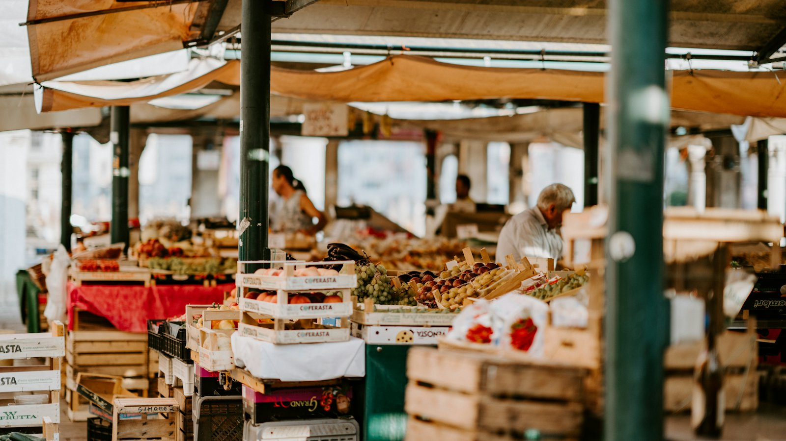

leert je hoe de wereld werkt.

Geld, werk, de markt en de overheid. Kies je jaar en je niveau, en ga aan de slag met de lesstof, films en lesapps.
Van de industriële revolutie tot de verzorgingsstaat. Vier boekjes met hoofdstukken, spotprenten, games en examentraining.